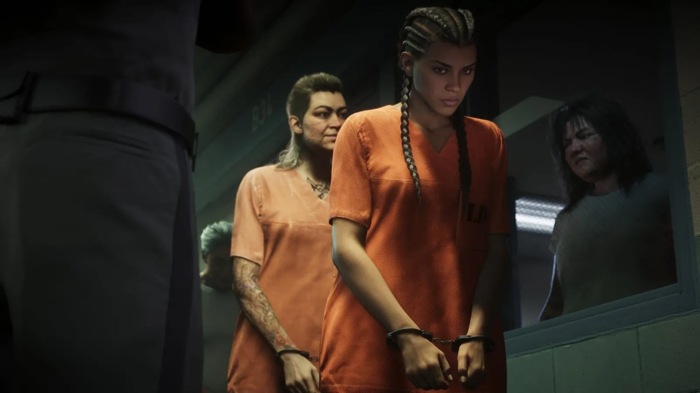
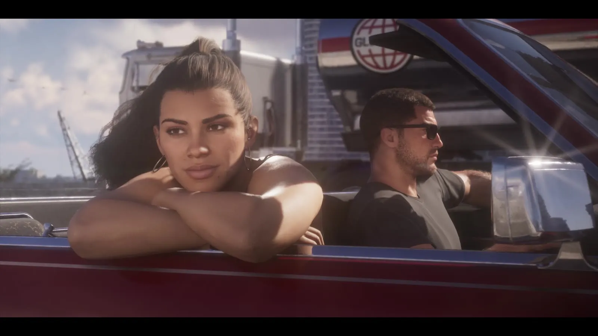

Трейлеры GTA 6: все видео, рекорды просмотров и музыка
Опубликовано:

- Трейлер 1 — 4–5 декабря 2023, музыка — Tom Petty «Love Is a Long Road». Рекорд: ~93 млн просмотров на YouTube за сутки.
- Трейлер 2 — 6 мая 2025, музыка — The Pointer Sisters «Hot Together». По данным Rockstar — 475 млн просмотров на всех платформах за сутки.
- «Расширенный показ» — 27 августа 2026, длинное геймплейное видео.
- Launch Trailer — 15 октября 2026, 1:29, песня Justice «Flower in a Hurricane» с Tame Impala, SZA и King Gizzard & The Lizard Wizard.
Трейлер 1 (декабрь 2023)
Rockstar планировала выпустить первый трейлер 5 декабря 2023 года, но вечером 4 декабря он утёк в сеть в низком качестве — и студия опубликовала его на 15 часов раньше. Трейлер длится 1,5 минуты и впервые показал Лусию, Вайс-Сити и год выхода — 2025.
- Лусия в оранжевой робе в тюрьме штата Леонида — разговор с надзирателем.
- Пляжи, яхты, ночные клубы, дорогие машины Вайс-Сити.
- Болота с аэроглиссерами, аллигатор в бассейне, мад-парк в Ambrosia.
- Десятки «роликов из соцсетей» — пародии на реальные вирусные видео из Флориды.
- Финал — Лусия и Джейсон грабят магазин.
Трейлер 2 (май 2025)
Второй трейлер вышел 6 мая 2025 года — через четыре дня после новости о переносе на 2026 год. Он больше рассказывает о героях: Джейсон встречает Лусию после тюрьмы, появляются Брайан Хедер, Кэл, Real Dimez и другие. Вместе с трейлером Rockstar обновила сайт и выложила больше 70 официальных скриншотов и описания персонажей.
«Расширенный показ» (август 2026)
27 августа 2026 года Rockstar показала длинное видео с игровым процессом — «Расширенный показ» (An Extended Look). В нём — ограбление ювелирного, погони, частный терминал с джетами, ночной клуб, переписки героев и меню оружия. Мы разобрали его по секундам — «Расширенный показ» GTA 6: что показали за 26 минут — с таймкодами.
Launch Trailer (октябрь 2026)
Третий трейлер Rockstar выпустила 15 октября 2026 года в 6:00 по тихоокеанскому времени (16:00 по Москве), за пять недель до релиза. Он длится 1 минуту 29 секунд и заканчивается датой выхода. По данным Eurogamer, кадры записаны на PS5.
- Вывеска «Welcome to The Keys», марина Брайана, Джейсон полирует катер.
- Игуана на дороге (сравнение), аэроглиссер, хранилище банка.
- Футболка Джейсона «U.S. ARMY MARAUDER» и электронный браслет на щиколотке.
- Уличная гонка, мотоцикл над надземным поездом (сравнение).
- Биплан с человеком на крыле (сравнение), мужчина со змеёй, девушки в розовых балаклавах, машина шерифа.

Рекорды просмотров
| Видео | Рекорд |
|---|---|
| Трейлер 1 | ~93 млн просмотров на YouTube за 24 часа — рекорд для видео не о музыке (побит рекорд MrBeast). Книга рекордов Гиннесса зафиксировала его как самый просматриваемый трейлер игры за сутки. К октябрю 2026 — больше 300 млн просмотров. |
| Трейлер 2 | По данным Rockstar (The Hollywood Reporter) — больше 475 млн просмотров на всех платформах за 24 часа. Это больше, чем у трейлеров «Дэдпула и Росомахи» (365 млн) и «Фантастической четвёрки» (200 млн). |
| Launch Trailer | ~76 млн просмотров на YouTube за первые три недели. |
Музыка трейлеров
| Видео | Песня | Исполнитель |
|---|---|---|
| Трейлер 1 | Love Is a Long Road | Tom Petty (1989) |
| Трейлер 2 | Hot Together | The Pointer Sisters (1986) |
| Launch Trailer | Flower in a Hurricane | Justice feat. Tame Impala, SZA, King Gizzard & The Lizard Wizard (2026) |
Первые два трейлера использовали лицензионные хиты 1980-х, а Launch Trailer — новую песню Justice, французского дуэта, который написал оригинальную музыку к игре. «Flower in a Hurricane» вошла в альбом Grand Theft Auto VI: The Album (Grand Theft Auto VI: The Album — 34 трека и уже вышедшие синглы), а Justice выступят на концерте GTA 6 в Майами (GTA 6: The Festival — концерт в Майами 21 ноября: кто выступит и как туда попасть). Песня Тома Петти 1989 года после трейлера снова стала популярной в стримингах — так же случилось с «Hot Together» после второго трейлера.
- Трейлер 1 вышел через 10 лет и два с половиной месяца после GTA 5 — и через 25 лет после основания Rockstar (1998).
- Rockstar подчеркнула: трейлер 2 целиком снят в самой игре на PlayStation 5.
- Все три трейлера вышли с разницей больше года: декабрь 2023, май 2025, октябрь 2026.
Частые вопросы
Сколько трейлеров у GTA 6?
Три трейлера и одно длинное геймплейное видео — «Расширенный показ».
Какая песня в Launch Trailer GTA 6?
«Flower in a Hurricane» — Justice с Tame Impala, SZA и King Gizzard & The Lizard Wizard.
Какая песня в первом трейлере GTA 6?
Tom Petty — «Love Is a Long Road».
Сколько просмотров у трейлера GTA 6?
Трейлер 1 — около 93 млн на YouTube за сутки; трейлер 2 — 475 млн на всех платформах за сутки.
Источники: Rockstar Newswire — трейлеры 1–3 и «Расширенный показ»; rockstargames.com/VI/launch-trailer; Variety и Guinness World Records — рекорд трейлера 1 (12.2023); The Hollywood Reporter — 475 млн просмотров трейлера 2; Eurogamer, PC Gamer, Vice — Launch Trailer и песня «Flower in a Hurricane» (15.10.2026); YouTube — счётчик просмотров.
Каждый день — одно сравнение: кадр игры рядом с реальным фото. Подписывайтесь:
YouTubeInstagramTikTok